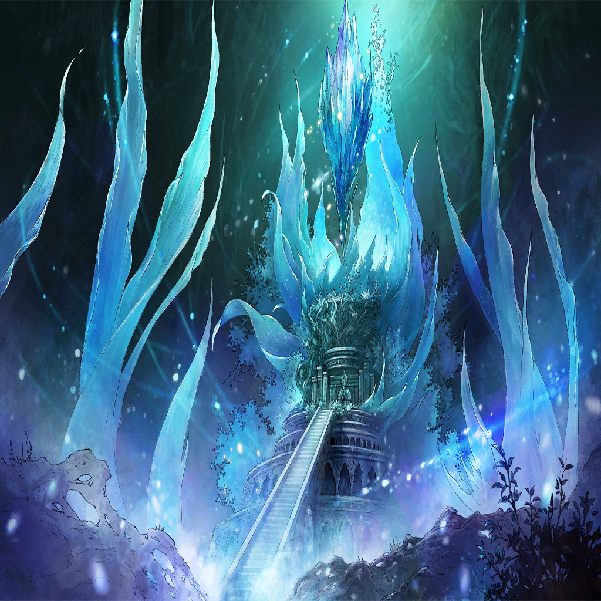
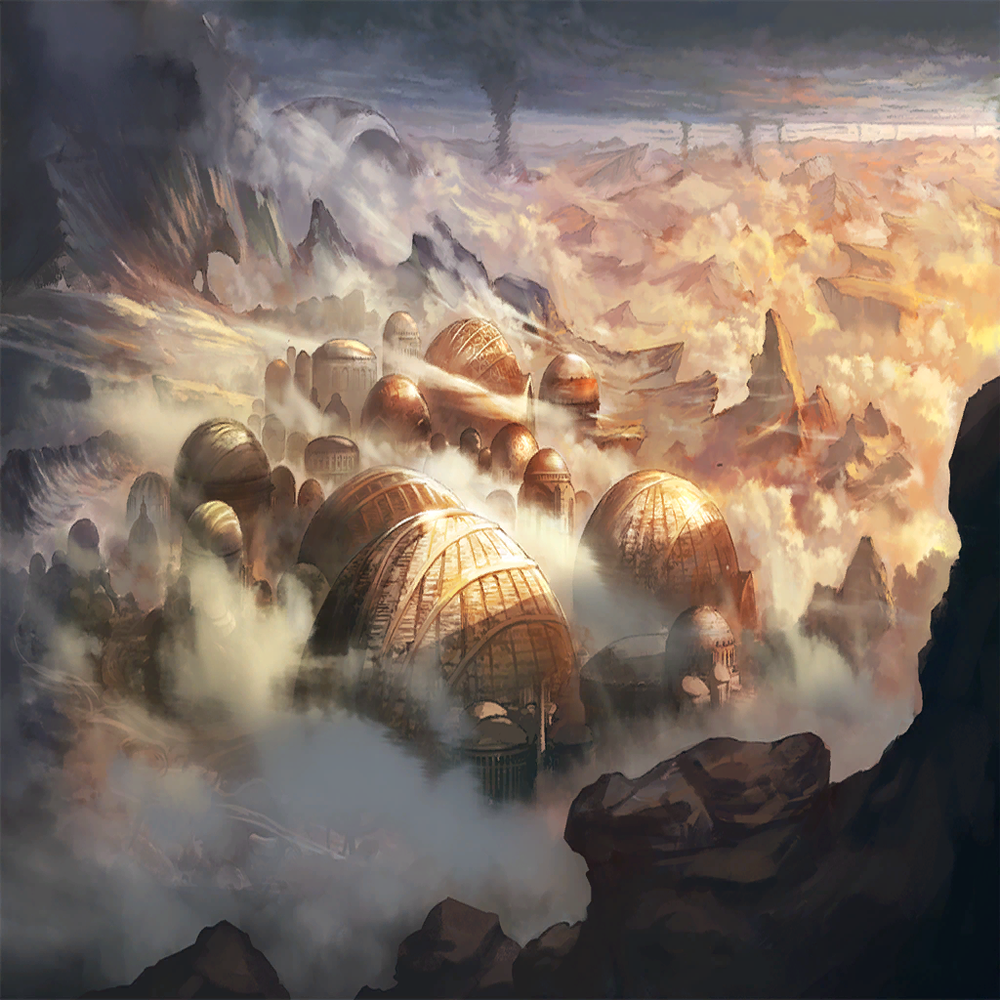
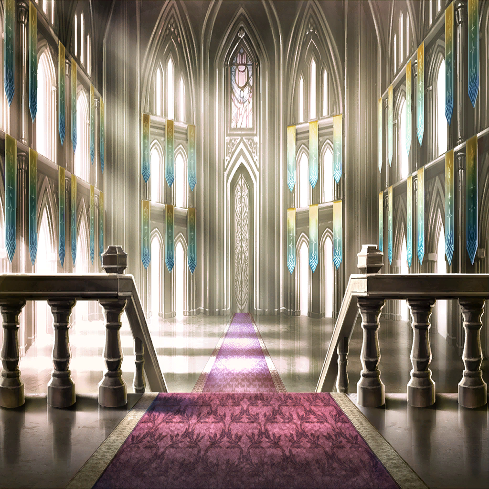

|
|  |
| リザ |
…っ、本気で…部屋中斬りつけた…
ここ、貴女たちの聖域じゃなかったの!? |
| マーシア |
いえ別に？
ここは立地的に便利だというだけです
我らの信仰は常にこの胸にありますので |
| リザ |
そういう問題じゃ、ないでしょうが…！ |
マティア |
同情しますが、諦めてください
姉さまは常識とか道理とか、
まず最初に蹴っ飛ばす系女子ですので |
| マーシア |
だって、策を弄するって
そういうことでしょう？ |
マティア |
…こういうヒトなので |
| リザ |
は――そう… |
| リザ |
まあ、いいわ
私の仕事は、終わったから… |
マティア |
…？ それはどういう、 |
| エナンジ |
まあ、待つがよい。人の子よ |
マティア |
…!? このマギル、七竜…！ |
| エナンジ |
この娘、ここで失うわけにはいかぬのでな
回収させてもらうぞ？ |
| リザ |
エナン、ジ…
なんの、つもり―― |
| エナンジ |
ちょっとした気まぐれよ
好意には甘えておくものであろう？ |
マティア |
…逃がすとでも？ |
| エナンジ |
死にたいのなら、止めぬがな？ |
マティア |
………… |
| エナンジ |
ふふ、良い判断だぞ
今のうぬでは我には届かぬ |
| エナンジ |
もう千年、頑張って修行するがよい |
マティア |
…そんなに生きられるわけないでしょう
貴女たち竜と違って、
私たちの魂は短命なのですから |
| マーシア |
…マティア |
マティア |
姉さま、助かりました
まさかあの痛みも傷も、すべて幻術とは |
マティア |
こちらの魂――マギルに直接干渉し、
偽物の現実を見せていたのですね
…姉さま？ |
マティア |
姉さま!? |
| マーシア |
――ごめんね、
ちょっと気疲れしちゃった |
| マーシア |
うーん
気合いも案外、万能じゃないみたいねー？
ごめんちょっと寝ます。おやすみー |
マティア |
…はぁ。心配させないでください |
マティア |
まあ、これで祭壇は取り戻しました
…ようやくの反撃です |
マティア |
竜の王オピネウス
現状において最強の竜体。最悪の罪竜
この世界でこれ以上の敵はいない… |
マティア |
ふふっ――腕が鳴りますね |
|  |
|  |
| エサイ・イグナシオ |
――暴食の街を奪還する為に、
彼女らが動いたか |
シャヘル |
はい
兵を起こすのではなく、少数の精鋭で
ゲリラ戦を仕掛けている模様です |
| 傲慢の兵士 |
地の利もあちらにある為、
思うように反撃できず
こちらの兵に多くの損害が… |
| エサイ・イグナシオ |
なら、退き時だな
全軍を暴食の街から撤収
傲慢の層まで下がらせてくれ |
| 傲慢の兵士 |
…よろしいのですか？ |
| エサイ・イグナシオ |
よくはないが、仕方がない
オピネウスは今、創世の準備の為
このヒエロソリュマを離れられない |
| エサイ・イグナシオ |
かといって、あちら側の戦力…
層を渡る旅人たちは、
個人戦闘力が異常に高い。頭おかしい |
| エサイ・イグナシオ |
汎竜の方々を投入してすら、
止められるか怪しいだろう
つまり、戦力の浪費だ |
シャヘル |
エナンジ様に救援を要請しては？ |
| エサイ・イグナシオ |
あの女狐は動かないさ
むしろ下手に刺激して、変な思いつきで
事態を混乱させられても困る |
| 傲慢の兵士 |
では、直ちに全軍を退かせます |
| エサイ・イグナシオ |
ああ、頼むよ |
シャヘル |
竜を三柱失ってなお、抗いますか
人の子というのは、不思議ですね |
| エサイ・イグナシオ |
そうかい？
私としては“やはり”という感想だ |
| エサイ・イグナシオ |
人間は諦めが悪いからね
たとえ分の悪い賭けであろうと
勝ち筋がある以上、捨てきれない |
| エサイ・イグナシオ |
そうして私たちは、
多くの滅びを経験した |
シャヘル |
改善をしようとは思わないのですか？ |
| エサイ・イグナシオ |
たまに成功してしまうからね！
みんなその成功体験が忘れられないのさ |
| エサイ・イグナシオ |
いや、しかし困ったね
彼ら絶対攻め込んでくるよ。この層に |
シャヘル |
あれだけの敗北を喫してなお、ですか
私であれば、自らの生存圏――
ここでは暴食の層の防衛に注力しますが |
シャヘル |
ここにはオピネウス様の竜界もあります
攻め入る無謀は、
あちらも知っているでしょう |
| エサイ・イグナシオ |
暴食の民はそうだろう
だが、あの旅人たちは違う
彼らが守りたいのは、住処じゃない |
| エサイ・イグナシオ |
友を愛し、悪を憎む心
己が願いを善なるものとする為の証明
つまり―― |
| エサイ・イグナシオ |
彼らは、それぞれの正義を守る為に
立ち上がるんだ |
| エサイ・イグナシオ |
それが人間の本質だと、そう信じてね |
シャヘル |
人間の、本質――ですか |
| エサイ・イグナシオ |
私に言わせれば、夢物語も甚だしいがね |
| エサイ・イグナシオ |
だってそうだろう？
いつの時代も――戦いを始めるのは
常に誰かの“正義”じゃないか |